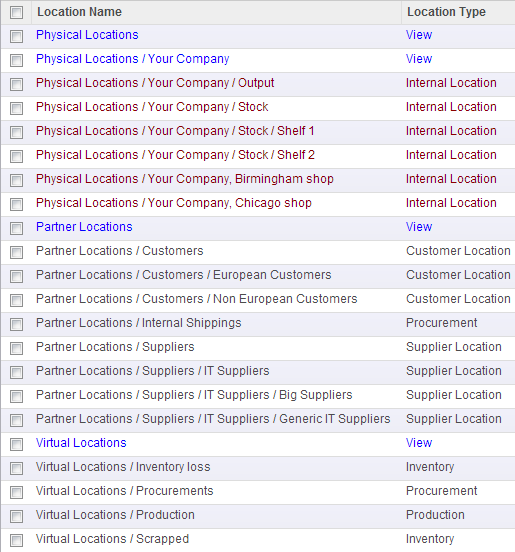

Almacén |
  
|
Almacén |
|
La siguiente sección explica el uso de las ubicaciones del stock y el movimiento de mercadería entre la empresa, proveedores, clientes e internamente.
La gestión de los stocks de OpenERP se basa en el concepto de doble entrada que se utiliza en la contabilidad. En OpenERP no se habla de la desaparición o aparición de mercadería, consumo o la pérdida de los productos: en lugar de eso, se habla de movimientos de stock de un lugar a otro.
Al igual que en la contabilidad, el sistema OpenERP genera una contrapartida a cada una de sus movimientos, como los ingresos de los proveedores, las entregas a clientes, ganancias y pérdidas de inventario, y el consumo de materias primas. Los movimientos de stock se realizan siempre desde una ubicación origen a otra ubicación destino. Para satisfacer la necesidad de contrapartida de cada movimiento de las existencias, el software es compatible con diferentes tipos de ubicación acciones:
• Ubicaciones físicas,
• Ubicaciones de partners,
• Ubicaciones virtuales como contrapartes para la adquisición, la producción y el inventario.
Ubicaciones físicas representan almacenes y su estructura jerárquica. Estos son generalmente las ubicaciones que son administrados por los sistemas tradicionales de gestión de existencias.
Ubicaciones de partner representa las existencias de sus clientes y proveedores. La recepción de mercadería de un proveedor se puede representar como el movimiento de mercancías de un la Ubicación del proveedor a una Ubicación física en su propia empresa. Las localizaciones de los proveedores suelen mostrar stocks negativos y las ubicaciones de los clientes por lo general muestran un stock positiva tendiendo al infinito.
Ubicaciones virtuales juegan el papel de contrapartes para la producción se utilizan en las operaciones de fabricación. Fabricación
se caracteriza por el consumo de materias primas y la producción de productos acabados. Virtual
ubicaciones se utilizan para las contrapartes de estas dos operaciones.
En OpenERP, las Ubicaciones están estructuradas jerarquicamente. Puede estructurar las ubicaciones en forma de árbol, que dependen de una relación del tipo padre-hijo. Esta relación permite niveles más detallados de análisis de las operaciones y una mejor organización del stock.
Ejemplo de estructura de Ubicaciones:

Ademas, OpenERP tiene la capacidad de gestionar lotes y números de serie garantizando el cumplimiento de los requisitos de trazabilidad impuestos en la mayoría de las industrias.